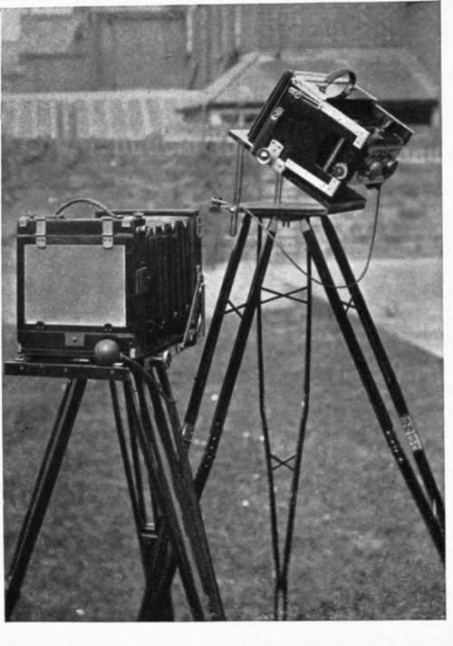

Chapter I. Introduction
Description
This section is from the book "Nature Photography For Beginners", by E. J. Bedford. Also available from Amazon: Nature Photography for Beginners.
Chapter I. Introduction
The number of persons who are devoting some attention to the fascinating subject of Nature Photography appears to be on the increase, judging from the many books dealing with it, in some form or other, which have been published during the past few years. Certainly, it might be said at the present day, " Of making many Nature books there is no end; 99 but it would hardly be equally true to say, " Much Nature study is a weariness of the flesh." On the contrary, the study of Nature is one of the best recreations for both body and mind, and should, therefore, be encouraged in all young people as well as in those of more mature years. One likes to think it is owing to an increased appreciation of Nature's ever-varying delights which has brought about the demand for additional literature devoted to the subject드 demand which is so well provided for at the present day. Nature study, as a subject of instruction, has been introduced into many schools with very satisfactory results. It has proved of far greater interest to the scholars than some of the other subjects taught.
The Nature lover will surely be gratified to find that many, who at one time took pleasure in killing our wild life, now take much greater pleasure in photographing it, and, at the same time_what is more satisfactory still듧eave it unharmed for others to observe and enjoy.
Some of the books already published show what remarkable results may be achieved, provided the photographer has the necessary time and means at his disposal; coupled with the all-important exercise of plenty of patience. The names of such successful exponents of the art as Messrs. R. and C. Kearton, R. B. Lodge, Oliver Pike, and Douglas English occur to one's mind as some of the more prominent workers. But it is not every one, however enthusiastic he may be, who has the necessary time and means at his disposal to produce similar results, even if he were willing to dangle over dangerous cliffs at the end of a rope, climb high trees, or stand in water for hours, not to mention other exciting adventures. Only being able to devote a limited amount of time to Natural History Photography myself, I have had to rely for the majority of my subjects on such as are of common occurrence.
This manual has been written specially for those commencing the study of Nature Photography, or those desirous of taking it up, the majority of whom will probably find themselves in similar circumstances to myself, as regards the time they are able to devote to the practice of their hobby. An endeavour will be made to describe how to obtain many interesting results with an expenditure of only the limited time which the majority have at their disposal, and I hope, therefore, the suggestions offered may be found both useful and practical.
When we consider it is only about forty years ago that the dry plate was introduced which made photography possible as a hobby for the average individual, we can hardly refrain from marvelling at the wonderful results which have since been obtained. The illustration of our books and magazines at the present day is only one phase of the way photography has been able to minister to our profit and enjoyment, and to mention two others: astronomy owes many important discoveries to the sensitive photographic plate, which will reveal the existence of bodies quite impossible to be perceived by the aid of the most powerful telescope that has been constructed hitherto. The Rontgen Rays, too, by the aid of the sensitive photographic plate, have also administered to our infirmities, and permit a diagnosis of broken bones and many other uses in surgery which would have been quite impossible without their assistance.
Fig. 1. The Authors Cameras and the Tilting-Board.
But as we are here dealing more especially with Nature Photography, let us consider a few useful results now made possible in that section of work. Many of the children who are brought up in our large cities and towns, and who attend the elementary schools therein, are unable, for various reasons, to see the wonders of Nature for themselves. Photography has made it possible to bring wild Nature to such as these, and by so doing, give them an interest in living things which they could not otherwise have. Some of us may have heard the story of the boy who was going mushrooming, and on asking a pal to accompany him received the following reply, " Oh, yes, I will come as I am a good 'un to climb !" It is no doubt due to conditions such as the above which has led to the introduction of Nature study into our schools.
Another valuable feature of photographic work is the facility with which records can be made by its aid. Many counties have now, in full working order, what is known as a "Photographic Survey" The object of this is to obtain records of any building, object, or custom of interest든specially such as are passing away듡or the use of future generations. Should we not value such records of bygone ages now, had it been possible to have obtained them? What an interest, for instance, a photograph of the egg of the Great Auk in situ would have, or of the bird itself, which has only become extinct during comparatively recent years, and which was at one time quite common. Very few specimens of the egg exist at the present day, and one sold by auction in the year 1894 realised the huge sum of three hundred guineas.
One cannot but fancy how Gilbert White would have welcomed the use of photography to aid him in his studies, had it been available in his day. His charming book, The Natural History of Selborne등hich has passed through about a hundred editions, and has become quite a classic등ould, I think, have been even more interesting still had it been illustrated by a series of photographs taken by the author. The admiration he has expressed for some water-colour drawings done for him by an artist named Grimm leads one to think he would have been delighted with the help of the camera also. The point that more directly concerns us in connection with these surveys is that photographs of the fauna and flora of the district, and also of other natural objects, are wanted to add to the collections of records; and here, surely, we have a vast field of interesting and valuable work in which we may all lend a hand.
Continue to:
Tags
nature, photography, art, birds, camera